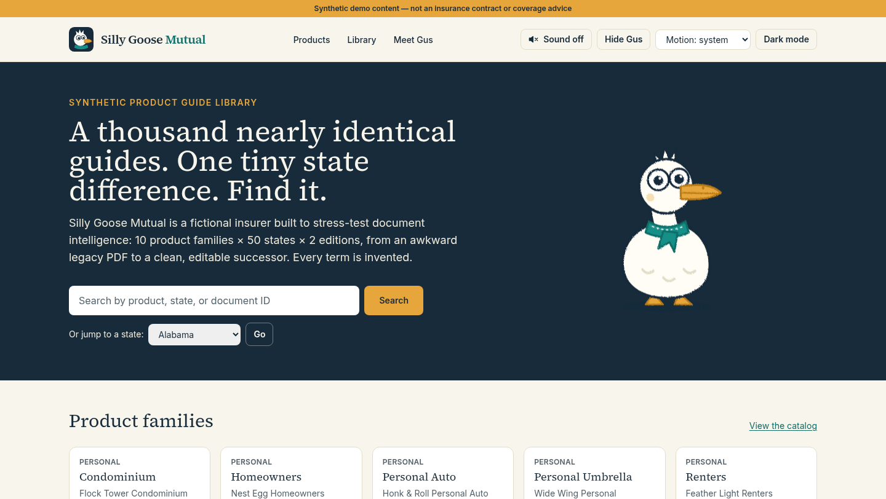
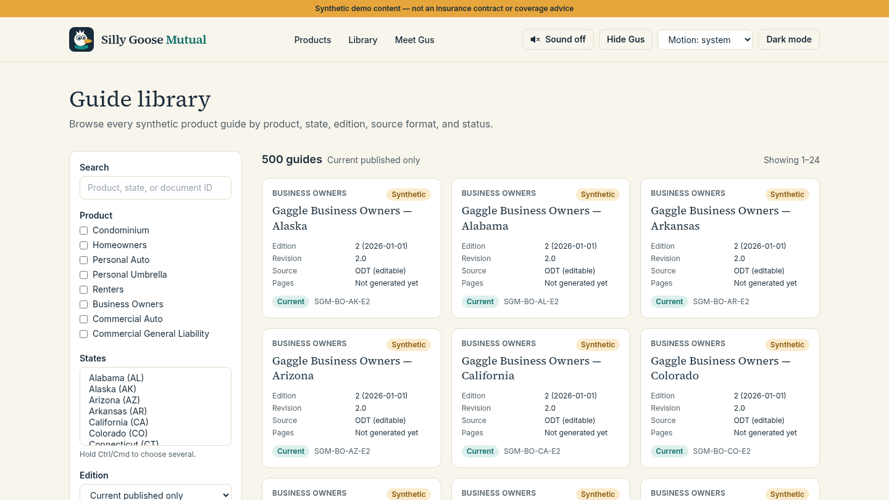
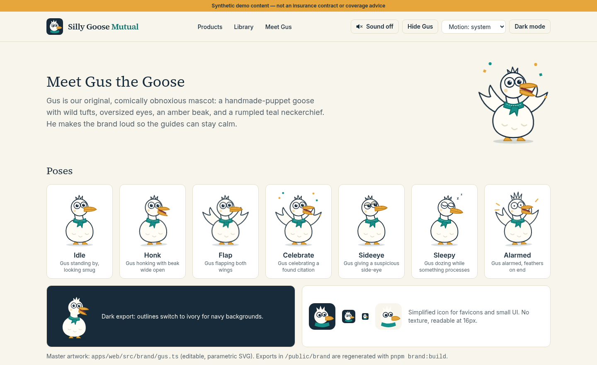

Legacy to editable
Edition 1 is a dense, dated PDF. Edition 2 is rebuilt as an open ODT source with a DOCX export and a modern PDF.
Hi. I'm Gus.
Gus is the loud, puppet-felt mascot of Silly Goose Mutual, a fictional insurer we invented to stress-test document intelligence. He guards a library of 1,000 nearly identical product guides — and he honks when you find the one sentence that differs.
Sound plays only when you click. Gus has not approved any document or determined any coverage.
Every pose renders from one parametric SVG master. Click a card to hear his cue.
Our full-size mascot loves meeting the public. The public has mixed feelings. Staged, fictional cartoon clips; nobody was hurt.
Gus was invited to read a picture book. He did not read the picture book. Silent clip with captions.
A ceremonial first pitch, minus the pitch. Both dugouts are still empty. Silent clip with captions.
Gus was handed oversized scissors. The ribbon did not survive. The tomatoes are fine. Silent clip with captions.
What we're building
A searchable reading room over a wholly synthetic insurance library, built to prove that retrieval can tell Homeowners in New York, edition 2 apart from Homeowners in New Jersey, edition 1 — and cite exactly where it found the answer.
Edition 1 is a dense, dated PDF. Edition 2 is rebuilt as an open ODT source with a DOCX export and a modern PDF.
Every answer points to the exact guide, edition, section, page, and quoted passage — or says it is not found.
A deterministic golden dataset scores every search change before vectors or LLMs touch the answer path.
Draft, review, filing, and approval are bound to exact artifact hashes in a clearly labeled simulated DOI workflow.
Ten families, each written for all 50 states with small, deliberate state-specific overrides.
Screens from the Next.js app: home, the 1,000-record library, and Gus's own page.



Seven staged pull requests, each shippable on its own.
App shell, design system, Gus, schema, local services, home/catalog/library.
Facts and overrides, 1,000 PDFs, 500 ODT/DOCX, manifest, challenge set — plus Gus's community videos.
Immutable ODT/DOCX uploads, conversion review, semantic and visual diffs, role-gated simulated approvals, hash-bound publication.
PDF extraction with OCR for scanned pages, provision- and table-aware chunks, local embeddings, scoped lexical + vector + hybrid search, scored on a 117-query eval set.
Web reader, PDF viewer, find-in-guide, cited answers.
Cross-library search and a state-by-state comparison matrix.
Eval suite, accessibility, performance, handoff.